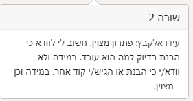
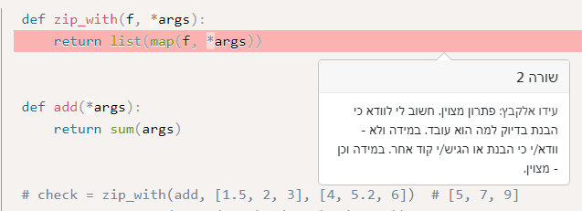

בד’כ חיבור אומר להוסיף - כך אני מבינה את זה - קבוצה שמכילה את כל האיברים האלו ביחד. הפירוט עוזר להבין איך להגיע לשם ואיך לייצר את הקבוצה.
כדי להוסיף אין משמעות לדימיון בין אורכי הקבוצות (?)
את צריכה לחבר בין קבוצת 100 המספרים הראשונים וקבוצת כל המספרים הזוגיים בין 1 ל 1000. (לכל אחת אורך משלה לא חייב להיות זהה)
הקבוצה המאוחדת, שזה מה שצריך ליצור, מן הסתם לא תכיל איברים שחוזרים על עצמם בשתי הקבוצות.
2 לייקים
המספר שאמור לצאת זה 146?
צוות הקורס, עזרה קטנה בבקשה. על התרגיל האחרון קיבלתי הרבה הערות מסוג “למה לא for”
עד כמה שאני יודעת, אם אני רוצה לגשת לאיברים ספציפיים ברשימה, ולשנות אותם, אני לא יכולה להשתמש בעותק שנוצר בתוך לולאה, שכן, בסיום הלולאה רשימה נשארת ללא שינוי. לכן חייבת להשתמש בWHILE. מה אני מפספסת? תודה רבה
{kind=link}
אני לא בטוחה שזה השרשור המתאים, כדאי לפתוח שרשור חדש כשיש שאלה לא קשורה לנושא 
בכל מקרה זה נכון אם את רצה על כל אחד מאיברי הרשימה, אבל יש עוד דרכים לרוץ על רשימה עם לולאת for
תודה רבה על המענה, חשבתי שזה מתאים כי בתרגיל 6 יש לי בדיוק אותה משימה, לרוץ על רשימה דו מימדית.
וכמובן שאני יכולה לכתובת לולאה for i in range ולהגביל לאורך הרישמה, אבל ההערה שקבלתי בתרגיל אומרת אחרת. כמובן שככה יותר נוח לכתוב, אבל אז השינוי בשורה 64 לא נשמר מחוץ ללולאה
{kind=link}
אם את רוצה לשנות את הרשימה את אכן לא יכולה לרוץ על האיברים שלה. אבל נסי לכתוב את הקוד שלך עם for על range ותראי שזה יותר קריא.
או קי. תודה.
אז אני מבינה שכמו שכתוב בהערה, אי אפשר לעשות
עדיין אפשר, ולהשתמש ב־i וב־j כמו שעשית.
פשוט זה יראה מעט מוזר ועדיף משמעותית בצורה שהוצעה ע"י אורפז.
(אגב, באמת מוטב לו היית פותחת אשכול חדש עבור השאלה)
2 לייקים
תודה על התגובה, להבא אפתח חדש.
אני לא מצליחה לעשות כמו שאורפז כתב. הערך נשאר ללא שינוי.
רק ככה משתנה:
{kind=link}
אבל זה מה שכתבתי, רק שימי לב לבעיה הקטנה שיש לך בקוד
אפשר להפוך את זה להיות קצת יותר יפה אם תיזכרי מה range יכולה לקבל ומה היא יכולה לא לקבל
לייק 1
כן, זה בהמלצתך זה אכן יותר מובן.
אבל אני מבינה ממה שים כתב שאפשר לעשות גם כמו שאורפז כתב, שזה נראה עוד יותר טוב, אבל לא מצליחה
הסוד הוא להבין מה טווח הערכים שrange עובר עליו עבור קלט מסויים.
אם תעלי על זה תוכלי לנקות מעט את הקוד.
ואורפז היא בת (או מחשב תלוי איך מסתכלים על זה) 
5 לייקים
שאלה כללית לגבי כל החומר.
האם תוכלו לפרסם פתרונות של התרגילים היותר מסובכים של הקורס, במיוחד של השבוע?
אשמח לראות פתרון אפשרי לכל אחד מהתרגילים, לאחר מועד ההגשה.
אני מוצאת את עצמי הרבה פעמים מתברברת סתם.
כמו כן להרבה מהתרגילים שכן הצלחתי לפתור - יש פתרון די ארוך, שלדעתי יכול להיות יותר קצר וסולידי.
הי
מה אני אמורה להבין/ללמוד מזה?

הנוסח נשמע לי די ברור.
הכוונה היא שאם הבנת שזה עובד אבל לא איך ולמה, ודאי שאת משלימה את הידע הזה. לרוב תגובות כאלו יהיו על שימוש במודול או בחומר שלא למדנו, כמו CSS Selectors.
וכמו שכתוב, אם הבנת למה זה עובד — מצוין
אבל זה לא היה על CSS Selectors…
תקציר

לא למדנו map על הרבה ארגומנטים, ואיך זה עובד זה עניין סופר לא אינטואיטיבי.
אני מניח שהבודק שאחראי על התרגיל הופתע, כי זה פתרון שלא שגרתי שחניכים עולים עליו.
ביקש לוודא איתך שכתבת בעצמך ולא טריק שמצאת באתר כלשהו
יאללה בסדר. לא נעלבת